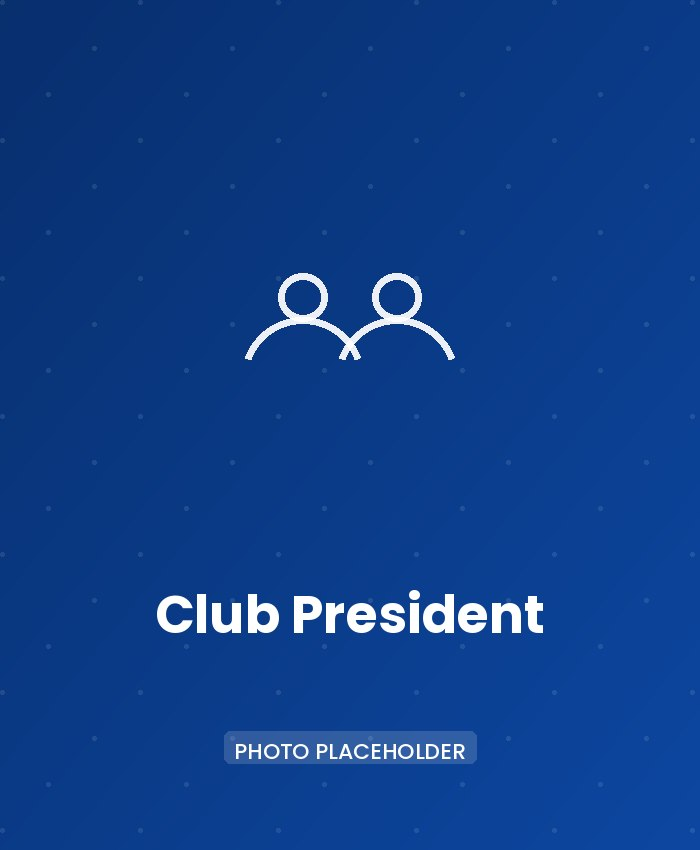
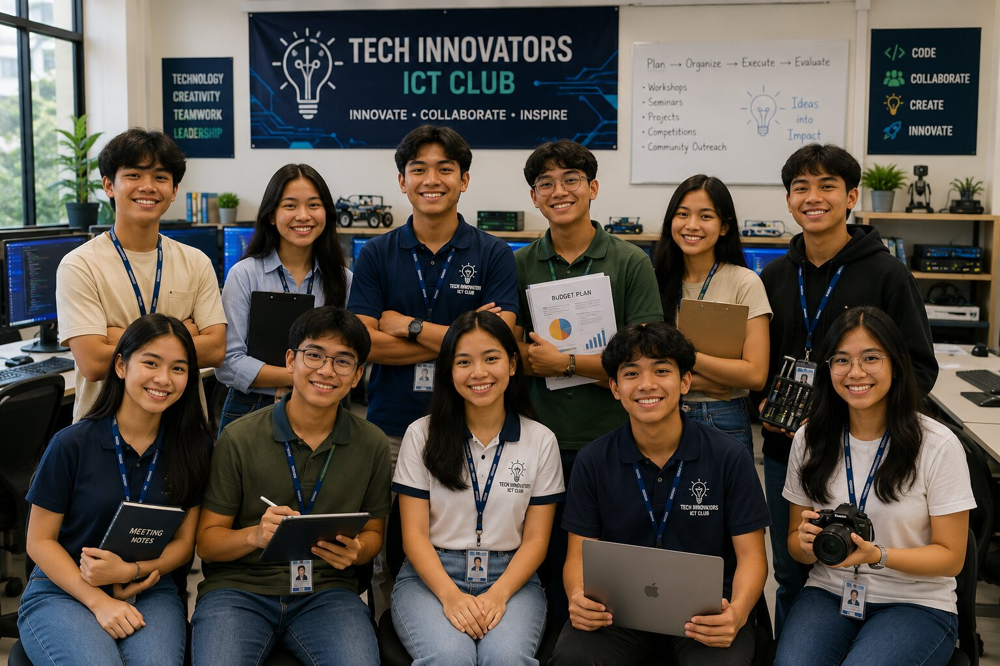

President
Vacant
Leads the club, oversees all activities, and works closely with the officers, adviser, and members to achieve the club's goals.
Leading with Service, Inspiring Through Technology
Behind every successful club is a dedicated team of student leaders who work together to organize activities, support members, and create opportunities for learning and innovation.
Our officers lead by example through teamwork, responsibility, creativity, and a commitment to serving both the club and the school community.
Meet the students who help guide the Tech Innovators ICT Club and discover how leadership creates opportunities for everyone to learn, grow, and succeed.

Leadership in the Tech Innovators ICT Club is more than holding a position. It is about serving others, encouraging teamwork, supporting fellow members, and helping the club achieve its goals.
Every officer contributes unique skills and ideas that help create a welcoming environment where students can learn, collaborate, and develop their talents in technology and innovation.
By working together with members, our officers help organize meaningful activities, promote responsible leadership, and inspire others to become future leaders.
Our club officers work together to lead the organization, support its members, and ensure that every activity contributes to a positive and meaningful learning experience. The following positions are currently prepared for future student leaders.

Leads the club, oversees all activities, and works closely with the officers, adviser, and members to achieve the club's goals.

Assists the President, helps coordinate club activities, and assumes leadership responsibilities when needed.
Records meeting minutes, manages club documents, and keeps important records organized and up to date.
Assists in managing the club's financial records and promotes responsible handling of club resources.
Reviews financial records and helps ensure transparency and accountability within the organization.
Promotes club activities, prepares announcements, and shares important information with members and the school community.
Maintains the club website and helps ensure that online information remains accurate, organized, and accessible.
Provides technical support during club activities and assists with software, hardware, and technology-related needs.
Promotes accessibility awareness and encourages inclusive practices in club projects, events, and digital content.
Plans, organizes, and coordinates club events while working closely with officers and members.
Represent their respective grade levels, communicate member concerns, and encourage active participation in club activities.
Every club officer has an important responsibility in helping the organization achieve its goals. By working together, the officers create a positive environment where members can learn, participate, and succeed.
Lead by example, encourage teamwork, and support fellow members in achieving the club's goals.
Help plan meetings, activities, workshops, and special events throughout the school year.
Share important announcements, listen to members' ideas, and encourage active participation.
Work closely with fellow officers, the club adviser, and members to build a supportive and productive organization.
Perform assigned duties with honesty, commitment, and accountability while representing the club positively.
Help create opportunities for learning, innovation, accessibility, and community involvement through club programs.
Every great leader begins as a learner. The Tech Innovators ICT Club encourages every member to develop leadership skills by participating in activities, supporting fellow members, and contributing to the success of the organization.
As you gain experience, you'll have opportunities to take on greater responsibilities, share your knowledge, and inspire others through leadership and service.
Your journey as a future technology leader starts with a single step—getting involved.